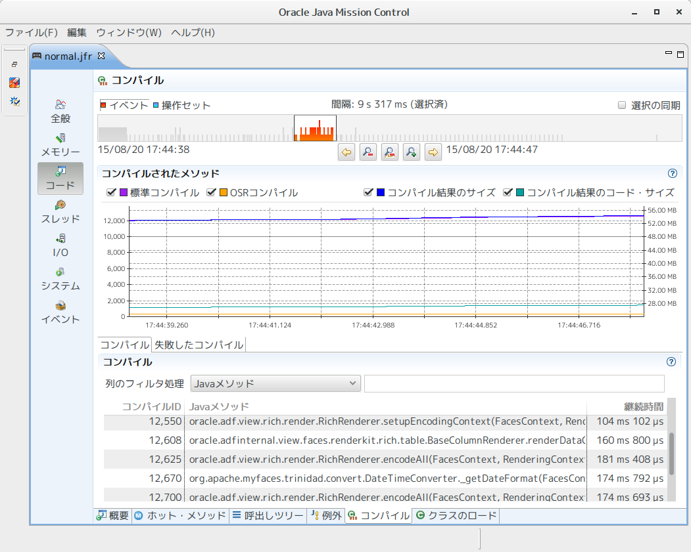
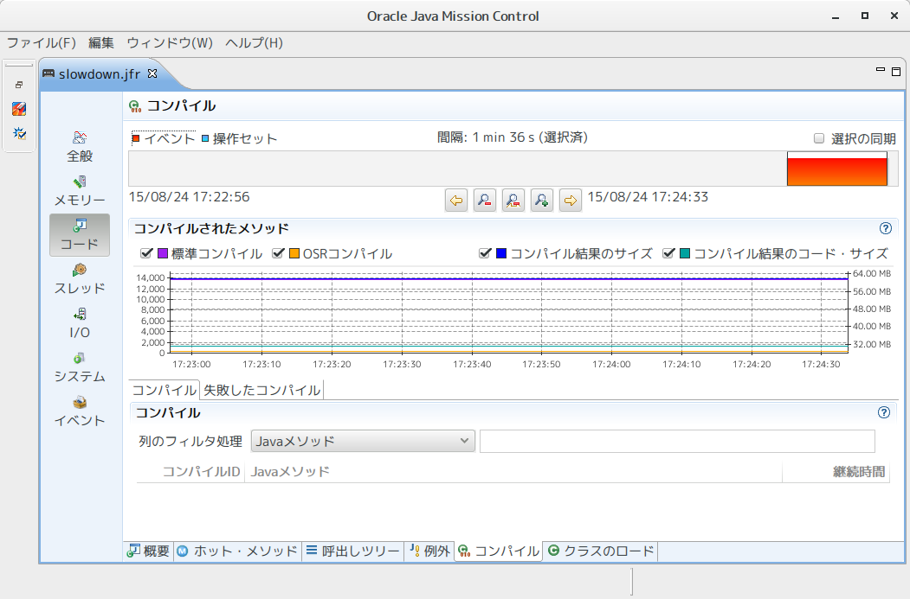
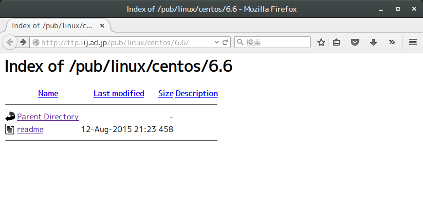
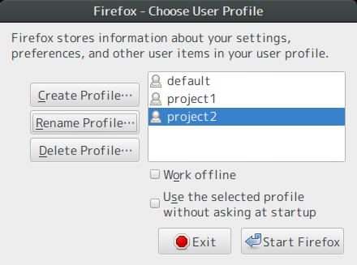

Table of Contents
1 CodeCacheによる性能劣化事例
先日CodeCacheによる性能問題が発生した、原因を突き止めるには時間が掛かりました。 そのわけは
- 全体が遅いではなく、一部処理のみ遅い
- スレッドダンプから遅い箇所の特定が出来ない
- プロファイリングからホットメソットの特定が出来ない
- 性能劣化時間帯に同期化によるロック待ちが発生していない
- 性能劣化時間帯のシステムコールのコストは平常時と変わらない
- 性能劣化時間帯にメジャーGCが起きていない、マイナーGCの時間も正常数値範囲ないである
よく言われているJVM性能に影響する要素を一通り確認しても、問題の特出が出来なかった。
今回の障害ケースは以下のような特徴があります。
- アプリケーションサーバ一定時間運転後、特定画面の処理時間が数十倍伸びる
- アプリケーション再デプロイ後、スローダウン現象が起きやすくなる傾向がある
- 一度性能劣化すると、アプリケーションサーバを再起動しないと回復しない
この現象はメモリリークによるGC時間が伸びるのような性能劣化ケースと似ている。
しかしGCによるスローダウンは波があるはず、かつ特定画面が遅いとは限らないでしょう。
つまり、CodeCacheによる性能劣化は原因を気づきにくい場合があります。
最終的Flight RecorderのJITコンパイラー記録から問題がCodeCacheにあることを推測した。
OpenJDKご使用の場合 -XX:+PrintCompilation JVM起動フラグでJITコンパイルログから同
じことも確認できる。
スローダウン前に取れた記録

性能劣化時間帯で取れた記録

ご覧の通り、性能劣化時間帯にJITコンパイラーが動いていないようだ。 CodeCache領域の使用量を確認すると、空きがないことも確認されました。 ここで問題はCodeCacheが足りないと推測出来るでしょう。ただ単に推測に過ぎないので、 根拠付けるためにテスト用アプリケーションをデプロイしてJITコンパイラーの挙動を確認しました。 やはりJITコンパイラーが動いていないのだ。
2 CodeCacheについて
CodeCacheについてJava Magazineに BEN EVANS さんの記事が分かりやすいと思います。
- Java HotSpot VM コード・キャッシュについて
- Java HotSpot VMにおけるJITコンパイルの概要
- Java HotSpot VMの内部を探る(2): パフォーマンス解析のための統計情報
- JITWatchを使用したJava JITコンパイルの理解
以下は自分のまとめです。
- JITコンパイラーの結果がCodeCacheに格納される
- CodeCacheが一杯になるとJITコンパイラーが停止してしまう
- JITコンパイラーが停止すると性能が劣化する（事例: 本来6秒で終わる処理が40秒かかる）
- アプリを振り返し再デプロイするとCodeCache領域が溢れる可能性がある
- SpringやJPAのような実行時にClassを動的生成するアプリに置いてCodeCache領域を大量に消費する場合がある
- JDK7で階層型コンパイラーを有効化するとCodeCache領域の消費が増加する
- ミドルウェア／アプリケーションサーバのCodeCache領域をチューニングすべき
- ミドルウェア／アプリケーションサーバのCodeCache領域常時監視しておくべき
[Java道具]jstat -gcの出力を見やすくする
jstat -gc でJVMのメモリ使用状況を確認する際によく使うのですが、少し見づらいと感じま
したので、整形用のオレオレスクリプトを作成しました。
jstat出力見づらい要因として
- 出力単位がbyteとなっています、数字長い時目視でメガバイト(mb)への換算が大変
- ヘッダ行と値行がズレる時があります
デフォルトの出力形式は以下の通り
$ jstat -gc 10901 S0C S1C S0U S1U EC EU OC OU MC MU CCSC CCSU YGC YGCT FGC FGCT GCT 55296.0 55296.0 0.0 0.0 334336.0 157179.1 890368.0 23266.0 35748.0 32020.9 5248.0 4068.9 3 0.124 2 0.195 0.320
次は自作スクリプトで整形後の出力形式(JDK8の場合)
--------------------------------------------- S0 領域 | 54.00 / 0.00 (MB) | 0.00% S1 領域 | 54.00 / 0.00 (MB) | 0.00% Eden領域 | 326.50 / 170.63 (MB) | 52.26% Old 領域 | 22.72 / 869.50 (MB) | 2.61% Meta領域 | 31.27 / 34.91 (MB) | 89.57% CCPS領域 | 3.97 / 54.00 (MB) | 77.53% --------------------------------------------- YGC 回数 | 3 回 YGC 時間 | 0.12 秒 FGC 回数 | 2 回 FGC 時間 | 0.20 秒 ---------------------------------------------
コードはgithubに公開しています。
出力加工機能以外、次の便利な機能も提供しています。
- JavaプロセスID自動特定する
- JAVA_HOMEを自動的に特定する
[tips][Linux]旧バージョンCentOSでyum更新できなくなった時
Table of Contents
1 CentOS 6.6でyum更新したら404エラー
CentOS 6.6でyum更新したら404エラーとなって更新できなくなった。
# yum update 読み込んだプラグイン:fastestmirror 更新処理の設定をしています Loading mirror speeds from cached hostfile * base: ftp.iij.ad.jp * extras: ftp.iij.ad.jp * updates: centos.usonyx.net http://ftp.iij.ad.jp/pub/linux/centos/6.6/os/x86_64/repodata/repomd.xml: [Errno 14] PYCURL ERROR 22 - "The requested URL returned error: 404 Not Found" 他のミラーを試します。 http://ftp.jaist.ac.jp/pub/Linux/CentOS/6.6/os/x86_64/repodata/repomd.xml: [Errno 14] PYCURL ERROR 22 - "The requested URL returned error: 404 Not Found" 他のミラーを試します。 http://ftp.nara.wide.ad.jp/pub/Linux/centos/6.6/os/x86_64/repodata/repomd.xml: [Errno 14] PYCURL ERROR 22 - "The requested URL returned error: 404 Not Found" 他のミラーを試します。 http://ftp.riken.jp/Linux/centos/6.6/os/x86_64/repodata/repomd.xml: [Errno 14] PYCURL ERROR 22 - "The requested URL returned error: 404 Not Found" 他のミラーを試します。
ブラウザからミラーサイトを直接確認するとreadmeファイルしかありませんでした。

readmeの内容は下記となります。
$ curl http://ftp.iij.ad.jp/pub/linux/centos/6.6/readme This directory (and version of CentOS) is deprecated. For normal users, you should use /6/ and not /6.6/ in your path. Please see this FAQ concerning the CentOS release scheme: https://wiki.centos.org/FAQ/General If you know what you are doing, and absolutely want to remain at the 6.6 level, go to http://vault.centos.org/ for packages. Please keep in mind that 6.0, 6.1, 6.2, 6.3, 6.4 , 6.5 and 6.6 no longer gets any updates, nor any security fix's.
簡単に言うと更新が止まった旧バージョンのパッケージは http://vault.centos.org/
ドメイン下に移管された。
というわけでyumリポジトリのURLを書き換えれば問題が解消される。
$ sudo sed -i -e "s|mirror\.centos\.org/centos/\$releasever|vault\.centos\.org/6.6|g" /etc/yum.repos.d/CentOS-Base.repo $ sudo sed -i -e "s|#baseurl=|baseurl=|g" CentOS-Base.repo $ sudo sed -i -e "s|mirrorlist=|#mirrorlist=|g" CentOS-Base.repo # yum update 読み込んだプラグイン:fastestmirror 更新処理の設定をしています Loading mirror speeds from cached hostfile base | 3.7 kB 00:00 extras | 3.4 kB 00:00 updates | 3.4 kB 00:00 （中略）
[tips][Java]OpenJDK8付属ツール実行時エラーの対策
Table of Contents
本記事のOpenJDK障害は次の環境で確認しています。
$ java -version openjdk version "1.8.0_60" OpenJDK Runtime Environment (build 1.8.0_60-b24) OpenJDK 64-Bit Server VM (build 25.60-b23, mixed mode) $ uname -a Linux mimi 4.1.6-1-ARCH #1 SMP PREEMPT Mon Aug 17 08:52:28 CEST 2015 x86_64 GNU/Linux
[tips][Linux]Firefox起動時にプロファイル選択出来るようにする
Web開発でクリーンなブラウザテスト環境が必要とする場面が結構あります。 普段利用しているブラウザの設定をリセットやキャッシュクリアは平気に出来ないでしょう。
この問題はブラウザのマルチプロファイル機能を利用すればを解決する。
例えばFirefoxに --new-instance オプションを付けて起動時すると下記のようなプロファイ
ル選択ダイアログが表示されて、「Create Profile」で新しいプロファイルを持ちたFirefoxが
起動される。

自分の環境では下記のdesktopファイルを追加することでランチャーからいつも起動出来るよう にしています。
.local/share/applications/myfirefox.desktop
[Desktop Entry] Name=MyFirefox GenericName=Web Browser GenericName[ja]=ウェブ・ブラウザ Comment[ja]=ウェブを閲覧します Exec=firefox --new-instance %u Terminal=false Type=Application Icon=firefox Categories=Network;WebBrowser; MimeType=text/html;text/xml;application/xhtml+xml;application/vnd.mozilla.xul+xml;text/mml;x-scheme-handler/http;x-scheme-handler/https;x-scheme-handler/ftp; StartupNotify=true Actions=NewTab;NewWindow;NewPrivateWindow; [Desktop Action NewTab] Name[ja]=新しいタブ [Desktop Action NewWindow] Name[ja]=新しいウィンドウ [Desktop Action NewPrivateWindow] Name[ja]=新しいプライベートウィンドウ
[Memo][Linux]bash環境にpecoを導入しました
Table of Contents
以前から percol の流行りに気になっていたが、python製のため導入が面倒さそうなので保留 しました。最近、percolを元にgolangで書かれたpecoが出てきて導入しやすくなったと感じて 手を入れました。
[tips][Linux]Sambaユーザのパスワード変更
普段はLinuxで作業しているけど、MS系のドキュメントメンテ作業はWindowsでやらざるを得な いのでSambaでLinux側のコンテンツをWindowsに共有するようにしていました。
ところで先週Windows端末再セットアップしたため、Sambaサーバに接続時にパスワードが聞か れた時が、すっかり忘れましたのでSamba側でパスワードリセットをしました。
- パスワードリセットコマンド（ユーザ登録コマンドと一緒）
$ sudo pdbedit -a -u test001 new password: retype new password:
- ついにパスワード情報の格納先を確認しました
$ pdbedit -L tdbsam_open: Failed to open/create TDB passwd [/var/lib/samba/private/passdb.tdb] tdbsam_getsampwnam: failed to open /var/lib/samba/private/passdb.tdb! User Search failed!
[tips][Linux]Dockerのプロキシ設定
基本は本家のドキュメントを見ろう！
https://docs.docker.com/articles/systemd/
ここでは Acrh Linx で確認された手順を記録する。
社内はフォワードプロキシ経由で外と繋ぐなので、デフォルトでは通らない ;-(
$ docker search oraclelinux Error response from daemon: Get https://index.docker.io/v1/search?q=oraclelinux: dial tcp 54.174.226.171:443: no route to host
/etc/systemd/system/<サービスID>.d/ 配下に環境変数の上書きファイルを定義し、サービ
スをリロードするだけです。
$ sudo mkdir /etc/systemd/system/docker.service.d $ sudo touch /etc/systemd/system/docker.service.d/http-proxy.conf $ sudo nano /etc/systemd/system/docker.service.d/http-proxy.conf [Service] Environment="HTTP_PROXY=http://*********************:8081" Environment="HTTPS_PROXY=http://*********************:8081" $ sudo systemctl daemon-reload $ sudo systemctl restart docker $ docker search oraclelinux NAME DESCRIPTION STARS OFFICIAL AUTOMATED oraclelinux Oracle Linux is an open-source operating s... 46 [OK] oracle/oraclelinux Oracle Linux is an open-source operating s... 16 [OK] tvierling/oraclelinux Oracle Linux base images, yum-updated to l... 2 [OK] centminmod/oraclelinux65base Oracle Linux 6.5 base 1.57GB image 1 avmiller/oraclelinux Personal Oracle Linux Test Images (Non-pro... 0 kiwenlau/oraclelinux 0 talberto/oraclelinux 0 ksasi/oraclelinux 0 saltfactory/oraclelinux Oracle Linux 0 arpagaus/oraclelinux 0 joseperez/oraclelinux-lamp oraclelinux 7.0 con mariadb, apache y php. 0 jinyan/oraclelinux Oracle Linux 6.6 0 hootjr/oraclelinux 0 poisoncreed/oraclelinux-base-with-httpd 0 bdpzone/bdporaclelinux6 Big Data Partnership Development Environme... 0 [OK] dyoung522/oracle-ruby OracleLinux running Ruby 0 [OK] bdpzone/bdporaclelinux7 Big Data Partnership Development Environme... 0 [OK] mlechner/oraclelinux7 GIS tools on Oracle Linux 7 0 tehmul/oraclelinux6-tc Oracle Linux 6+Oracle Server JRE 8+ Apache... 0 calaniz/oraclelinux 0 dyoung522/oraclelinux-dev OracleLinux with development environment 0 [OK] hedlund/oraclelinux 0 [OK] florentbenoit/oraclelinux-jdk7 0 [OK]
[Emacs]mew起動時にアカウントの選択を出来るように
久々のemacsネタです。
mewで複数メールアカウントで扱うときにSummary モードにおいて C で切り替えることが出
来るので非常に便利です。ただし、起動時にdefaultアカウントの選択機能が持っていないので、
mew-init-hookで拡張してみました。
;; アカウント1 (setq my-mew-config-1 (list '(proto "+") '(name "******") '(user "******") ; メールアドレスの@から左部分 '(mail-domain "******") ; メールアドレスの@から右部分 '(smtp-server "******") ; 送信用サーバアドレス '(smtp-port "1025") ; '(smtp-user "******") ; 送信用ユーザid '(pop-server "******") ; 受信用サーバアドレス '(pop-port "1110") ; '(pop-user "******") ; 受信用ユーザid '(pop-delete t) ; メール受信後サーバー側のメッセージを７日を保持する '(pop-auth pass) ; pop3 で受信時の認証方式、指定しない場合はapop方式が使用される '(pop-size 0) ; メールの上限サイズ。0 の場合は上限なし。 '(pop-header-only t) ; [c-u s]でヘッダの みのコピー '(dcc "******") ; 返信時に自分のアドレスをdccに入れる、dccは送信したメールのヘッダーに表示されない '(fcc "+sent") ; 送信したメールの保存先 '(smime-signer "******") ; 電子署名で使用する証明書id '(protect-privacy-always nil) '(privacy-method smime) ; 電子署名タイプの指定 '(draft-privacy-method smime) '(protect-privacy-always-type smime-signature) )) ;; アカウント2 (setq my-mew-config-2 (list '(proto "%") '(name "******") '(user "******") '(mail-domain "gmail.com") '(dcc "*******@gmail.com") '(protect-privacy-always nil) '(ssl-verify-level 0) ;; smtpサーバー '(smtp-user "*******@gmail.com") '(smtp-auth t) '(smtp-ssl t) '(smtp-server "smtp.gmail.com") '(smtp-ssl-port "465") ;; imapを使用する場合 '(inbox-folder "%gmail") '(imap-user "******@gmail.com") '(imap-size 5242880) ; 5m以内即時受信する '(imap-auth t) '(imap-ssl t) '(imap-ssl-port "993") '(imap-server "imap.gmail.com") )) ;;; アカウント3 (setq my-mew-config-3 (list '(proto "+") ;; （中略） )) ;;; アカウント4 (setq my-mew-config-4 (list '(proto "+") ;; （中略） )) (setq my-mew-account-list (list (append (list 'account1) my-mew-config-1) (append (list 'account2) my-mew-config-2) (append (list 'account3) my-mew-config-3) (append (list 'account4) my-mew-config-4))) (require 'dash) ;; アカウント選択処理 (defun my-mew-select-account () (let* ((account-name-list (mapcar (lambda (x) (pp-to-string (car x))) my-mew-account-list)) (selected-account (completing-read "mew account: " account-name-list nil t))) (message selected-account) (setq mew-config-alist (append (list (append (list 'default) (cdr (car (-filter (lambda (mew-config) (string= selected-account (pp-to-string (car mew-config)))) my-mew-account-list))))) (-filter (lambda (mew-config) (not (string= selected-account (pp-to-string (car mew-config))))) my-mew-account-list))))) ;; 起動時に走らせる (add-hook 'mew-init-hook 'my-mew-select-account)
デモ
[小道具][Java]スタックサイズ監視スクリプト
Table of Contents
/proc/<pid>/smaps プロセスメモリマッピングファイルからjavaスレッドのスタック使用状
況をいい感じに出力するスクリプトを作りました。